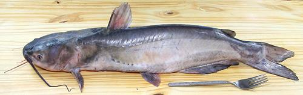

Channel Catfish

[Willow Catfish, Forked-tail Catfish, Fiddler, Spotted Catfish,
Ictalurus punctatus]
This catfish is native to North America east of the Rockies except the
eastern coastal plain north of Florida. It ranges from southern Canada to
northeastern Mexico and has been introduced into the Rio Grande, the Pecos
and some rivers in California. Channel cat is considered the finest eating
catfish in North America and is one of the most popular sports fish.
Catfish farming is a sizeable industry in the U.S. and the Channel Cat
dominates. Most channel cats are grown (and consumed) in the Southern
States but are widely available both fresh and as frozen fillets. This
fish can grow to over 50 pounds but the photo specimen weighed 4 pounds
1-3/8 ounces (factory cleaned) and was 24 inches long. Catfish have no
scales, convenient for preparation, but it means they are not kosher.
Observant Jews and Muslims need to use Carp instead, and deal with the
spines.
More on the Catfish Family.
Catfish is particularly popular in the cuisines of Mexico, the U.S.
South, Southeast Asia and other areas with big rivers. Flavor is mild but
distinctive and some claim they don't like it but they are outnumbered by
people who like it a lot. Pan fried or deep fried may be more acceptable
than poached or baked to those who think they don't like catfish - or you
can use the milder Vietnamese catfish and call it Basa or Swai - they'll
never know.
Cooking:
Catfish's white flesh remains fairly firm and
does not flake apart with moderate cooking, so it's a good fish for soups
and stews. Many ethnic recipes use small catfish and simply cut it into
1 to 1-1/2 inch skin-on segments. Fillets can be cut into 1 to 1-1/2 inch
chunks.
When using catfish in a soup or stew, it should go in for only the
last 10 minutes or so. A large catfish such as the photo specimen may
need at least 15 minutes. Stir it in well when adding it and avoid
excessive stirring after that so it doesn't get broken up.
For pan frying, you'll probably want to use smaller catfish because
large ones can be rather tough. Catfish fillets can be pan fried
"skin-on" but the skin does shrink a bit and you may wish to score it
lengthwise to prevent curling. Remember, when pan frying catfish fillets,
catfish doesn't flake easily. If it's a big catfish provide steak knives
with which to cut it up on the plate as it will be a bit tough. Fillets
will shrink somewhat, getting thicker, so you need to fry slowly enough
to cook all the way through.
Buying:
Most frozen catfish fillets found here in Los
Angeles are now Vietnamese (tra / basa / swai), but whole channel
catfish is widely available on ice in almost all ethnic markets. Live
channel cat can be found in the tanks at big Asian markets.
Scales:
Catfish have no scales, but they are covered with
a protective mucous making them exceedingly slippery. Particularly if you
intend to use the fish skin-on you can start by sliding it into the sink
and scrubbing it with dish washing detergent or a household cleanser, then
rinse thoroughly. I usually use one of the orange peel based cleaning /
degreasing liquids.
Clean:
A lot of catfish sold in North America has been
factory cleaned, but the gills may still be in, along with the tough
swim bladder and the blood works above it. A fair amount is sold
uncleaned as well. Cleaning is not difficult, though the body cavity
is fairly large.
Head:
These Catfish have heavy, armored heads, and at the
top, the head bone extends all the way to the aft end of the dorsal fin.
To remove the head, start a "V" cut from behind the dorsal fin going
forward, feeling out the edge of the bone. When you get up near the head,
you will have to turn sharply down, passing behind the stiff pectoral
fins. Cut the backbone from the inside to free the head.
Catfish is rarely cooked head-on, but if the head is used for soup
stock, the gills need to be removed. The easiest way is after the head
has been removed. Cut under the chin to free the collar, then bend it
back to expose the gills. Pull some from the head side, others from the
collar side.
Fillet:
Catfish have large, orderly bones so they can be
filleted relatively easily, once the head is removed. Cutting the fillet
is a bit different than on most fish. The ribs are short, stiff, and
almost directly horizontal from the backbone. First cut off the skirt
right at the tips of the ribs. You will have two triangular piece of
flesh and skin. Start filleting as for a regular round fish (details
on our Cleaning and Filleting Round Fish
page). When the fillet is free except from the ribs, turn the
fillet knife almost at a right angle and cut until you run off the ends
of the ribs.
The skirt on a catfish fillet is quite meaty but is best used
separately from the main fillet. The inside membrane is too thin to
remove but shrinks and will curl the skirt if you don't score it
lengthwise before frying. It is fine for soup or stew, and if you leave
the skin on it will balance the membrane and the piece won't curl badly.
Chunks & Steaks:
Small catfish, up
to 3-1/2 pounds, are often simply cut crosswise into segments about 1 to
1-1/2 inches long for use in soups and stews, with skin and bones intact.
This is done for many ethnic recipes. A razor sharp Chinese cleaver knife
is perfect for this, placed where you want the cut and driven through
with a soft faced mallet.
Skin:
Catfish skin has little shrink in cooking and
does not have a strong or "off" flavor, so it is left on for many uses,
including soups. The skin is strong enough so it's easily removed by the
long knife and cutting board Method, but
the knife should be held at a somewhat steeper angle than for most fish
to avoid taking flesh with the skin.
Yield:
Catfish has a decent yield for fillets, the 4
pound 1-3/8 ounce (factory cleaned) fish in the photo yielded 2 pounds
3-5/8 ounces of skin-on fillet (55%). Skin-off it was 1 pound 14 ounces
(46%) and without the skirt 1 pound 12 ounces (43%).
A typical smaller uncleaned fish, 16-1/4 inches 1 pound 9-1/2 ounces,
was 1 pound 6-5/8 ounces cleaned (89%). This fish yielded 10-7/8 ounces
of skin-on fillet (48% against cleaned weight). Not counting the skirt,
that was 8-7/8 ounces (39%). Skinless fillets (not counting skirt which
is difficult to skin) it was a little more than 7-5/8 ounces (34%).
Stock:
The head, bones and fins can be used to make a
light fish stock, usually for catfish recipes and not often used as a
general stock. For details see our
Fish Stock page.
sf_catabz* 090518 r 140303 - www.clovegarden.com
©Andrew Grygus - agryg@clovegaden.com - Photos on this
page not otherwise credited are © cg1 -
Linking to and non-commercial use of this page permitted